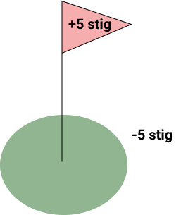

Test: Make it or Break it

Lýsing:
Það eru fimm stöðvar, fimm boltar, fimm umferðir og 1,5 feta breiður hringur utan um eina holu. Ef kúlan er inn fyrir hringinn, færðu ekkert stig. Ef þú setur ofan í færðu +5 stig. Ef þú ert fyrir utan hringinn eru -5 stig. Eftir hverja stöð verður maður að ganga amk 15 metra frá stöðinni og skrifa stigin sem maður fékk fyri rþessa stöð. Ástæðan fyrir því að það má ekki skrifa niður heildarfjöldann í lokinn er af því að þá væri æfingin andlæega léttari.
Tími:1klst -1,5klst
Erfiðleikastig: 7.5 / 10